Journal
Notes on the home. No agenda, just things worth thinking about.
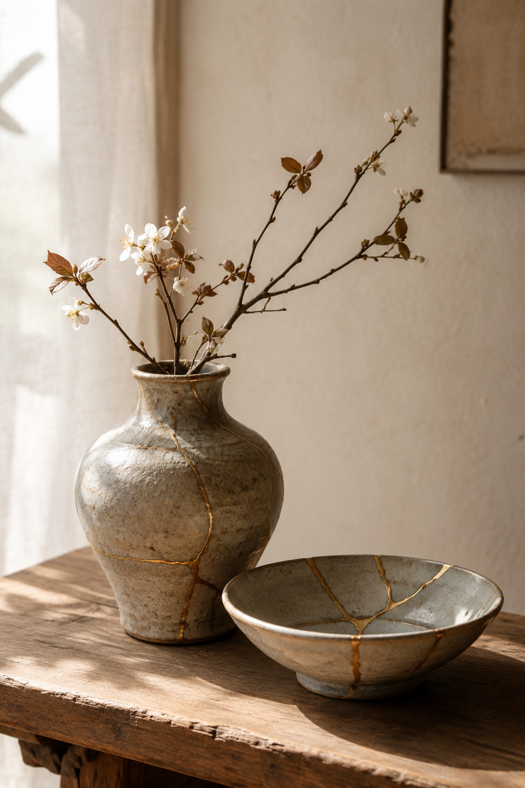
Beautiful and Useful
Why everyday things deserve to be both practical and lovely — and what happens when they are.
Read →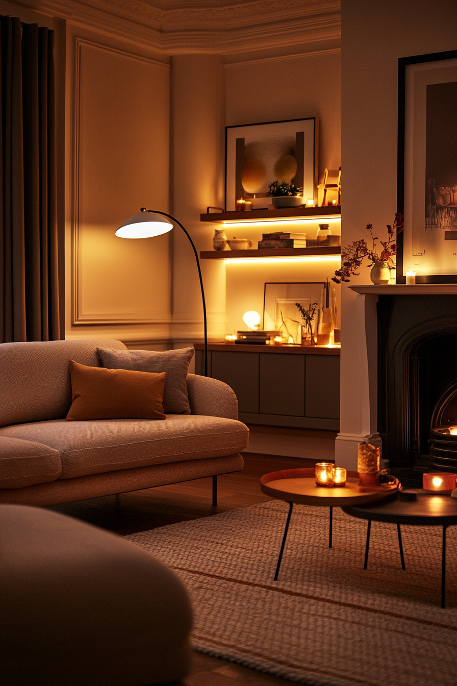
Why Lighting Matters More Than Almost Anything Else In A Home
Lighting changes the feeling of a home more than almost anything else — and it is often the last thing people think to change.
Read →
Why Cast Iron Cookware Always Feels Worth Keeping
A good cast iron casserole dish is one of those rare kitchen pieces that seems to get better the longer it stays in a home.
Read →
Why Glass Storage Jars Make Kitchens Feel Calmer
Good storage changes the atmosphere of a kitchen far more than people expect.
Read →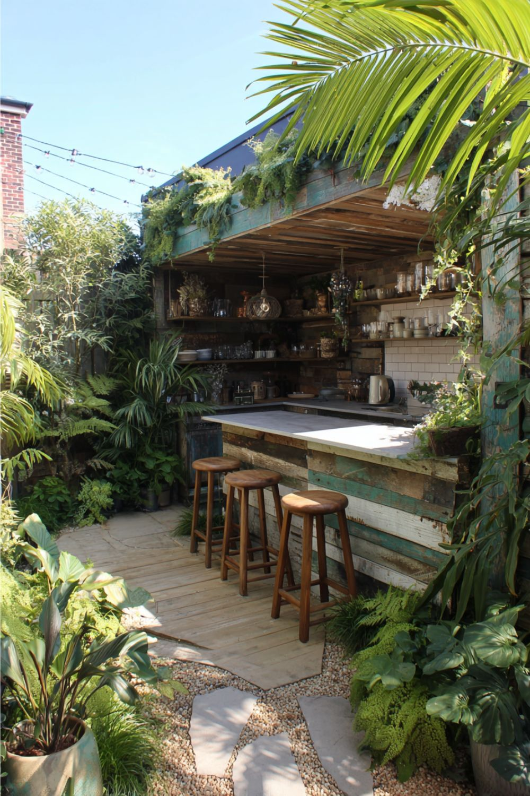
Why Outdoor Rooms Feel So Luxurious
A table beneath trees, lanterns glowing in the evening, natural materials that weather beautifully over time.
Read →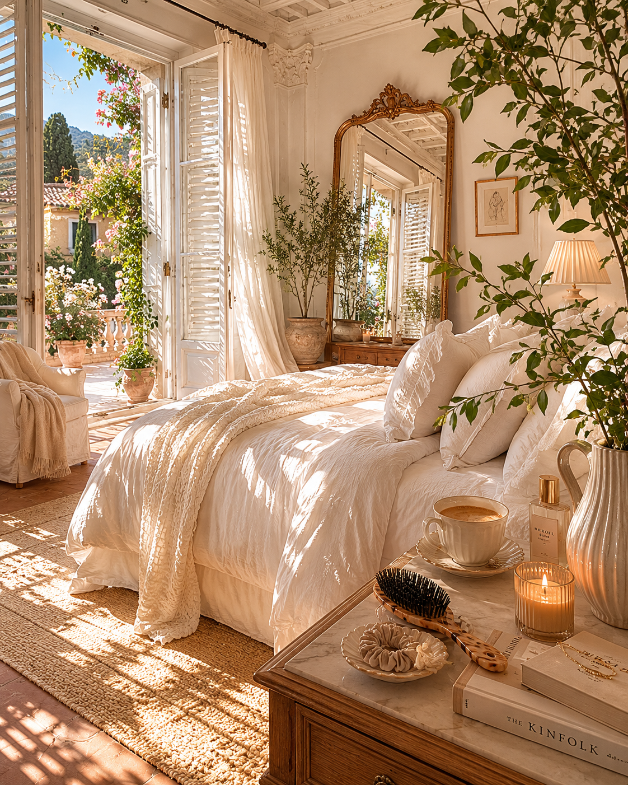
Soft White Bedroom Ideas That Feel Like an Italian Villa
Soft light, natural textures, rumpled linen and a little bit of quiet.
Read →
Why Japandi Bedrooms Feel So Calming
Japandi style combines Japanese simplicity with Scandinavian warmth — and the result is a bedroom that feels genuinely restful.
Read →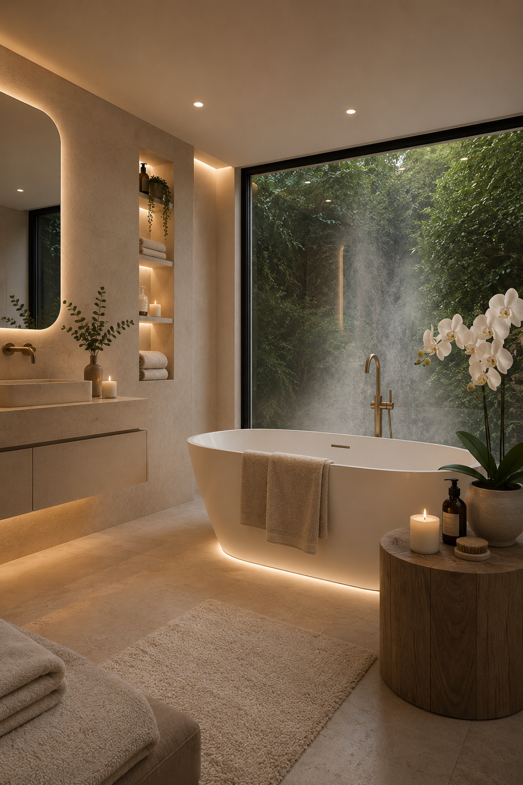
Future Spa Bathroom Ideas for a Calm Modern Home
Less cold minimalism, more warmth and atmosphere — why the most luxurious bathrooms are often the simplest.
Read →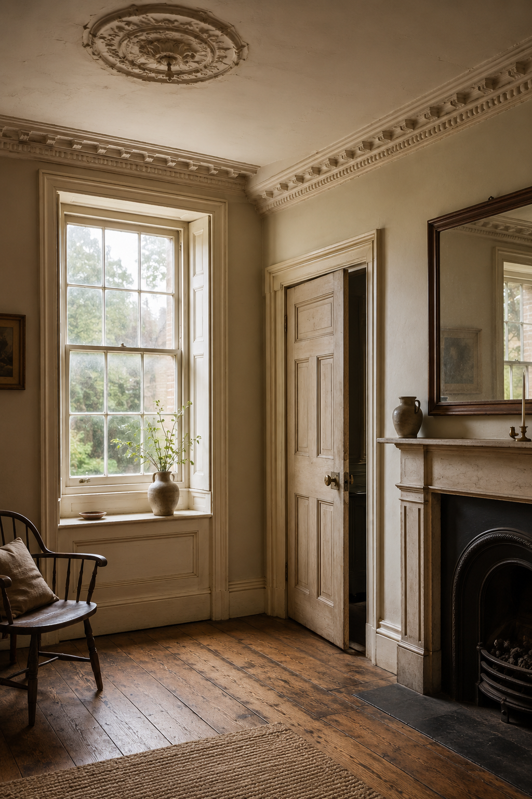
Architectural Details Worth Preserving in Older Homes
Original windows, fireplaces, floorboards, cornices and doors — why the details that give an older home its soul are worth keeping.
Read →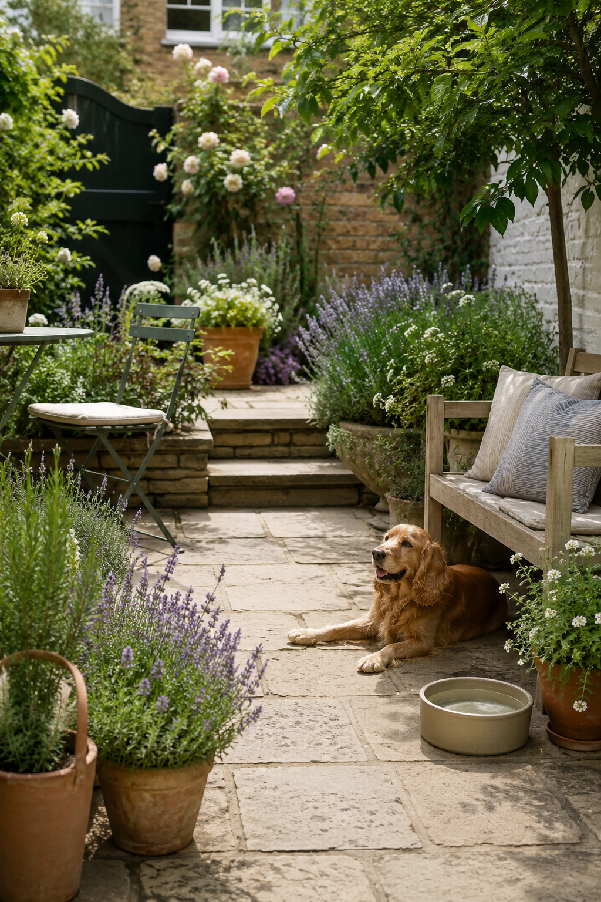
Pet-Friendly Garden Ideas That Still Look Beautiful
A garden that works for dogs and cats doesn't have to look purely practical.
Read →
How to Make a Front Door Look More Welcoming
A fresh coat of paint, better hardware, a pair of planters and good lighting — small changes that make a home feel warmer.
Read →
How to Make a Garden Look Expensive Without Spending a Fortune
Restraint, repetition, warm lighting and larger pots — the changes that make the biggest difference for the least money.
Read →
Which Kenwood Mixer Should You Buy?
From the compact Go to the Titanium Chef Baker — a simple, honest guide to choosing the right Kenwood stand mixer.
Read →
Beautiful and Useful: The Le Creuset Casserole — and Which One to Buy
Why the Le Creuset Signature Cast Iron Casserole is worth the money, and which size you need.
Read →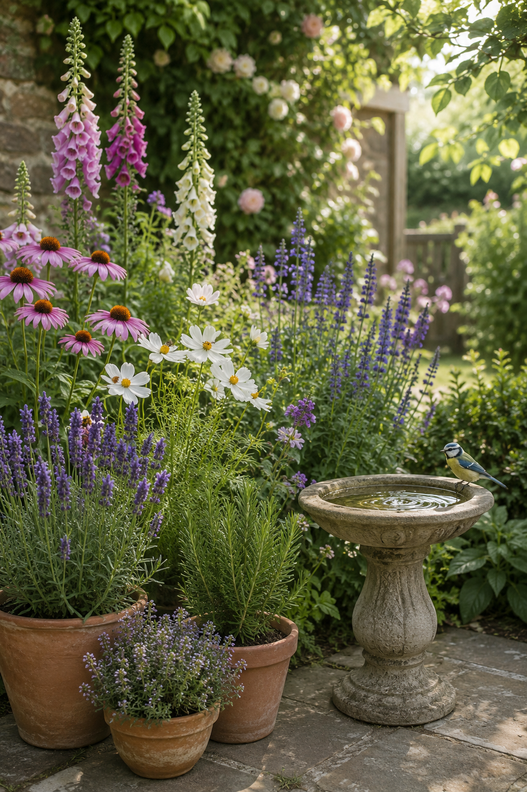
Wildlife-Friendly Planting: What to Grow for Bees and Birds
A wildlife-friendly garden doesn't have to look wild or unloved. Here's what to grow for bees, birds and butterflies.
Read →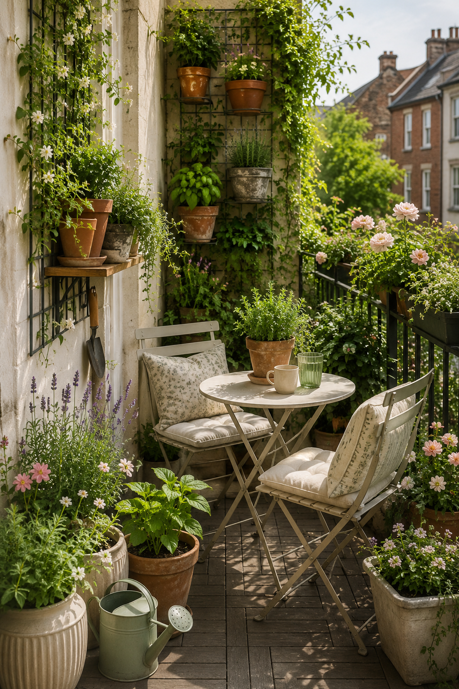
Small Garden, Courtyard and Tiny Balcony Ideas That Make the Most of Every Inch
Here's how to make a small courtyard, patio or balcony feel beautiful, useful and easy to enjoy.
Read →
Coffee Corner Ideas For A Calm Morning Kitchen
A coffee corner is not really about coffee. It is about creating a small daily ritual and one of the most welcoming corners in the kitchen.
Read →
What to Do in Your Garden at This Time of Year
Late May into June is when the garden really wakes up. A few small jobs now can make a big difference all summer.
Read →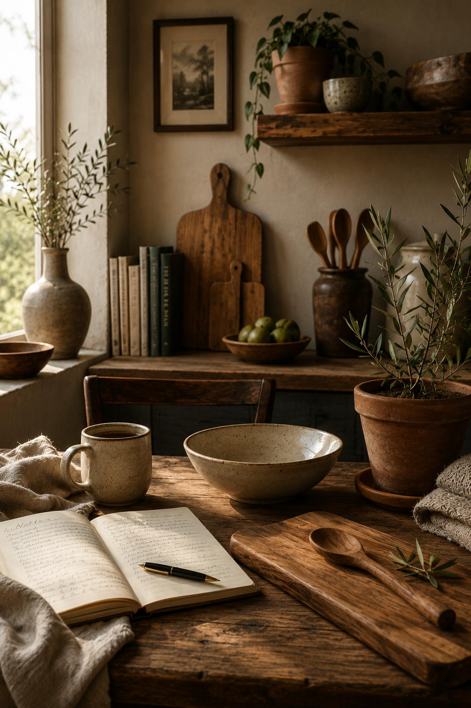
Why I Like to Choose Natural Materials
Wood, ceramic, linen — why the things made from something that came out of the ground tend to be the ones worth keeping.
Read →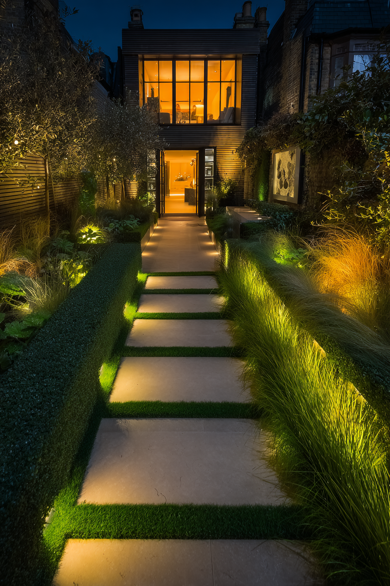
How Garden Lighting Changes Everything After Dark
Most gardens disappear at night. Good lighting changes that completely — and the most beautiful results often come from using it gently.
Read →